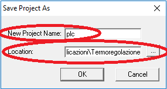

Ouvrez le projet HMI a travers l'icone MectSuite et appuyez sur Build → Run qmake

Attendez que la barre devienne verte.

Puis appuyez sur Build → Clean All

Attendez que la barre devienne verte.

appuyez sur Build → Build All.
Le tableau suivant présente les configurations possibles des versions entre PC et appareil.
|
|
Software PC 2.0.13 |
Software PC 3.x |
|---|---|---|
|
Appareil 2.0.13 |
OK |
NO |
|
Appareil 3.x |
OK |
OK |
Suivez les passages suivants pour convertir un projet 2.0.13 en version 3.x:
Ouvrez sa propre application API de ATCMControl Engineering et selectionnez “File Save Project As..”
Dans “New project name” inserez plc (tout minuscule)
Dans “Location” selectionnez le chemin du projet HMI. Par exemple “Termoregolazione” est le nom du projet créé avec QtCreator

Ouvrez le projet HMI a travers l'icone MectSuite et appuyez sur Build → Run qmake
Attendez que la barre devienne verte.
Puis appuyez sur Build → Clean All
Attendez que la barre devienne verte.
appuyez sur Build → Build All.
le projet a été converti en 3.x.
ATTENTION:l'appareil doit également être mis à jour. Voyez le chapitre “Mise à jour”